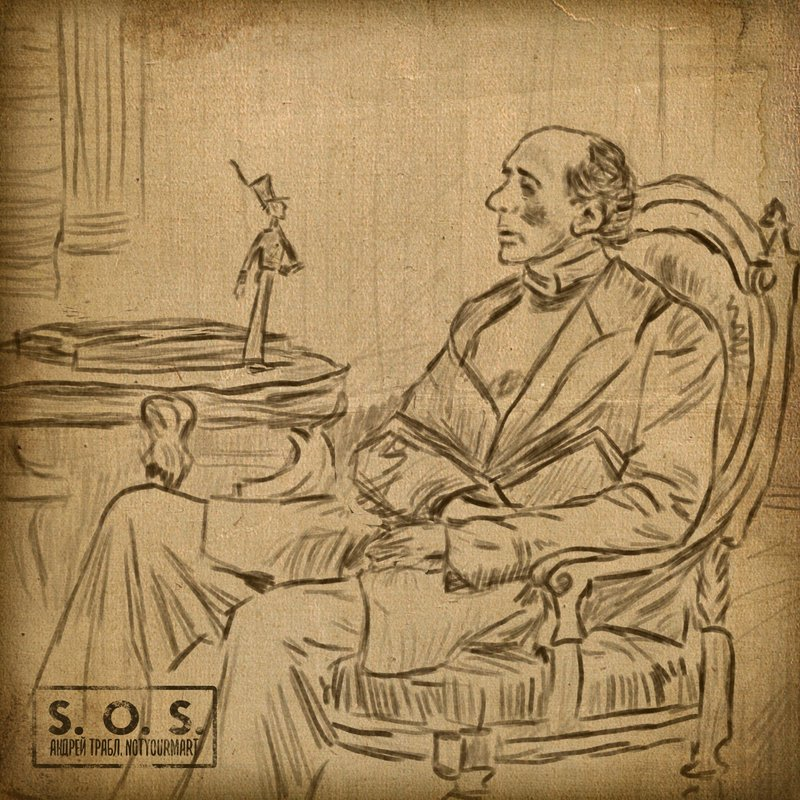

Андрей Трабл feat. notyourmart
S. O. S.
Текст: Андрей Трабл, notyourmart
Музыка: HalatProd
Запись: Canterville
Сведение, мастеринг: Андрей Трабл
Обложка: Саша Конст
Сколько я раз закрывался от мира, столько же раз я устраивал акции. Сколько я раз говорил им спасибо, столько же раз я просил отъебаться. Выкинул сон и выкинул сук, Выкручивал гайки, выкручивал звук – и всю мою жизнь будто сдали в аренду. теперь я считаю деньги, но чем-то вредным. Не надо лезть ко мне в голову. Я стойкий солдат, и ловлю равновесие, но пламя ведь так вредно олову, потому не даю вам огня в этих песенках. Этого ты добивался, Ганс? Я пылал столько раз, но в итоге гас. Все эти квартирники в кухнях закончатся скоро: плита, конфорка, газ. Небеса – потолок, и они кладут снег неровно на окнах. Из меня так себе препод: игнорю планету, как херовый географ. Это всё ты, моя Эбигейл, мой страшный сон. Это всё ты, но ты это ещё не всё. Стыд, фейл и позор. Вся моя жизнь – стыд и позор. Все мои мысли – фейл и позор, фейл и позор, стыд и позор. Стыд, фейл и позор. Вся моя жизнь – стыд и позор. Я забыл всё, что было, но помню, что я – это стыд, фейл и позор. Сколько же можно размазывать сопли? Каждый твой раз на битах – руминация. С толикой смысла рассказы и вопли вряд ли для масс, если вкратце. Никто не топит прямо, стирая подошвы – при смене трендов переобуться проще. В микро и толпы кричи о себе хорошем но talk-то тот же. Будь ты хоть сто раз поэтом от бога, лезешь в душу, боли поэтому много. Но не уверен, что так будет лучше, хоть миллион раз дойди до ручки. "Акулы пера" – в море фаст-фуда тебя не схавают. Даже не думай, мол, всё твоё – лепет и вздор, срач и раздор, стыд и позор. Небеса – потолок, бросай строить планы, тут всё придумано: терпеть и терпеть, играть свои роли, будто ты шоу Трумана. Хочешь бежать от себя, не пытайся, это ведь ты, это всё ты, это всё ты, это всё ты, ты, ты… Стыд, фейл и позор. Больше не ты – стыд и позор. Выкинь все мысли – фейл и позор, фейл и позор, стыд и позор. Стыд, фейл и позор. Вовсе не ты – стыд и позор. Это всё больше не ты, даже думать об этом – стыд, фейл и позор.